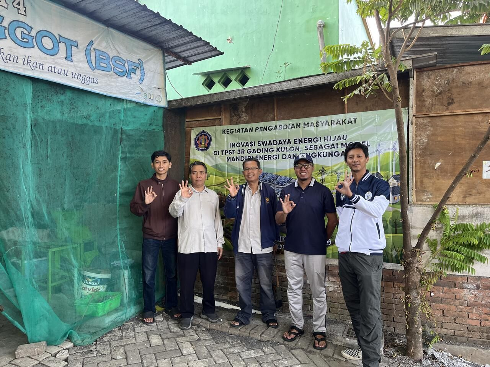

Green Energy Self-Sufficiency Innovations at the Gadingkulon 3R Solid Waste Management Facility as a Model for Energy and Environmental Self-Reliance
A community service initiative to develop a green energy-based waste management model through the implementation of biodigester technology at the Gadingkulon 3R Waste Treatment Facility.
- Utilizing organic waste as feedstock for biogas and organic fertilizer
- Optimizing the 3R principles (Reduce, Reuse, Recycle)
- Building community capacity in community-based renewable energy management
